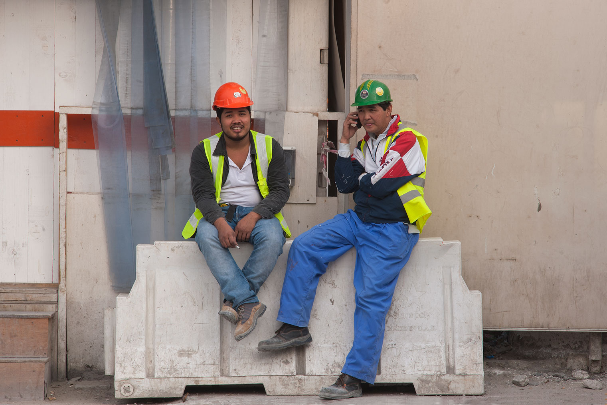
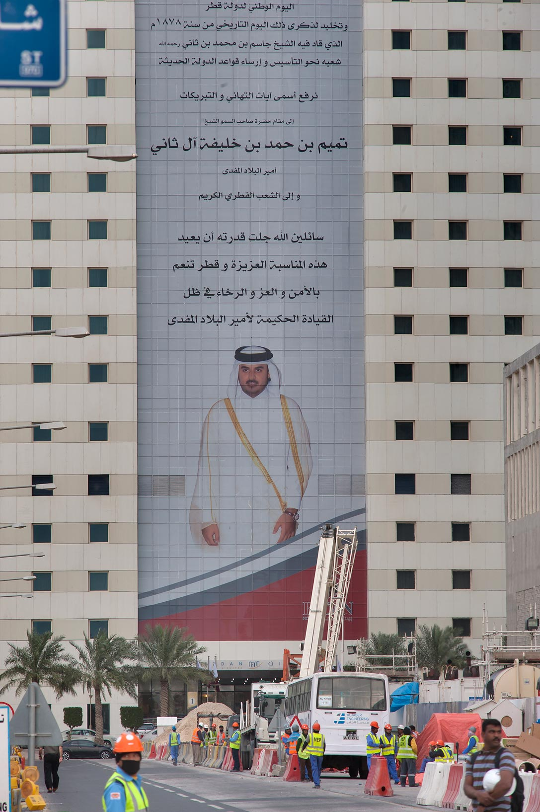

The Shadow of West Bay
Before the World Cup brought global scrutiny to Qatar's kafala labor system, the foundations of Doha's futuristic skyline were already being laid. This chapter documents the stark visual and physical contrasts between the ultra-wealthy environment being built and the harsh, restrictive reality of the marginalized men building it.

Two men sit perched on a heavy, white plastic road barrier at the perimeter of the Qatar Petroleum District construction site, offering a snapshot of the informal social dynamics and hierarchies among the migrant workforce. The setting is purely utilitarian: a dusty roadside against the plain hoarding of the site fence, underscoring the lack of dedicated, comfortable rest areas for the men building Doha's luxury infrastructure.
The differences in their attire point to the rigid, color-coded class system prevalent on Gulf construction sites. The laborer on the left holds a cigarette and offers a slight, weary smile to the camera. Their shared rest highlights that, regardless of their specific roles, all migrant workers in this system are ultimately bound by the same harsh environmental realities.

At the edge of a bustling construction zone in West Bay, a group of migrant laborers gathers at the end of their shift, dwarfed by a colossal portrait of Qatar's Emir, Sheikh Tamim bin Hamad Al Thani. The portrait functions as both a declaration of national pride and a looming symbol of the state's absolute authority over the urban landscape.
The photograph captures a striking vertical dichotomy that defined Qatar during its intense pre-World Cup development phase. The pristine, aspirational image of the ruling monarch projects a vision of a wealthy nation from above, while the foreign laborers who physically build that vision are relegated to the dusty, congested reality of the street below.